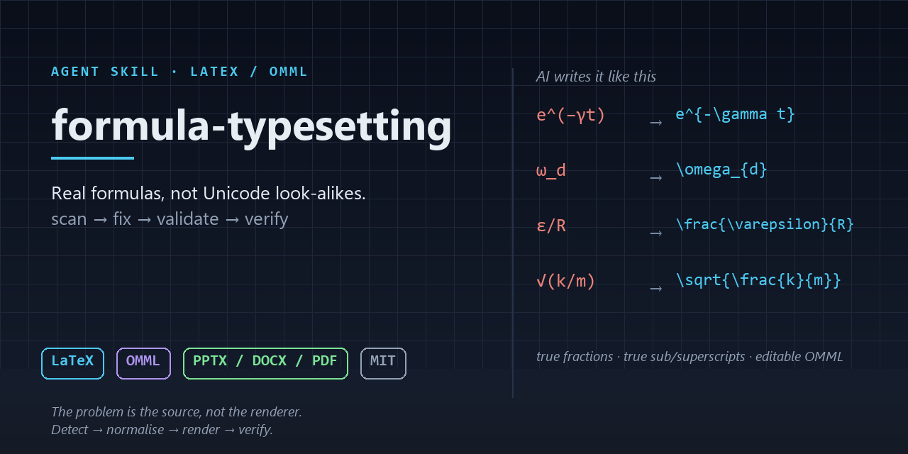

Large models write formulas as Unicode look-alikes: e^(−γt), ω_d, ε/R. They look right, and they render wrong. The problem is not the renderer — it is the source. This skill detects, normalises, renders and then verifies the result.
# install as an agent skill
gh skill install 242742532Celestia/formula-typesetting formula-typesetting
# or clone it
git clone https://github.com/242742532Celestia/formula-typesetting.git

I/I_0 becomes a real fraction with a bar, θ₁ becomes a real subscript, and the subscript of |I0_meas − I0_fit| is finally correct. Dimensional quantities such as W/m² are left untouched.scan only reports: how many pseudo-formulas exist and where they sit. The source file is never modified.
You get a rewritten copy plus a line-by-line comparison report. Confidence is split into three tiers — a bare variable in running text is reported, never rewritten.
validate actually runs pandoc / typst / docx. A missing tool is reported as skipped, never as “passed”.
Native OMML is injected so a formula opens in the PowerPoint equation editor. The shape count is checked before and after — a broken file is worse than no file.
Exit codes are three-state. 0 = ran and passed · 1 = ran and failed · 2 = never ran (tool missing). “Not verified” is never counted as “verified”. Run selftest after changing anything.